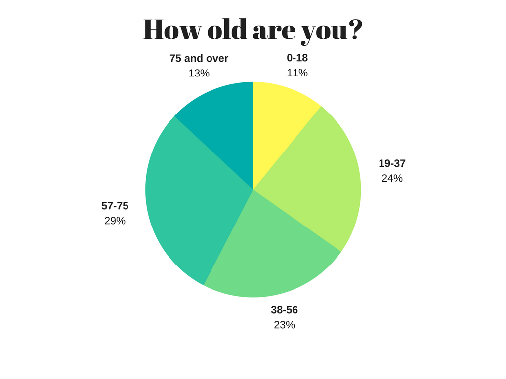
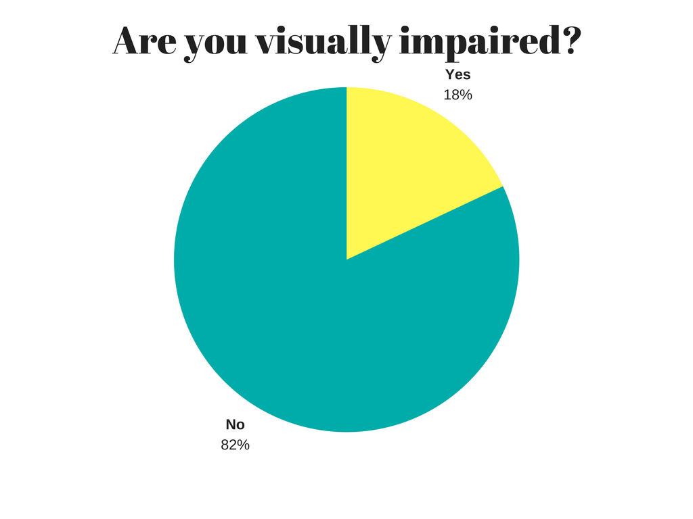
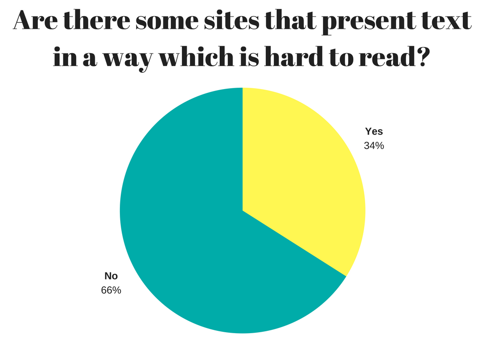
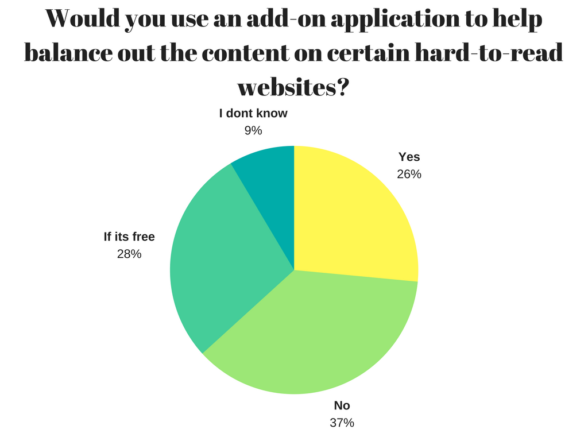

1 / 4

The statistics provided consists of wide spectrum of age groups. A portion of the diagram consists of people older than 56 years old (42%). The majority of however consists of adults, adolescents and children (58%).
2 / 4

The diagram shows that 18% of people that participated in the survey have som form of visual impairment (this includes near-sightness and far-sightness).
3 / 4

According to the survey, 34% find it hard to perceive text on certain websites. The majority do not struggle with this problem.
4 / 4

The statistics show that at least 26% are willing to use an application that would increase web accessability.